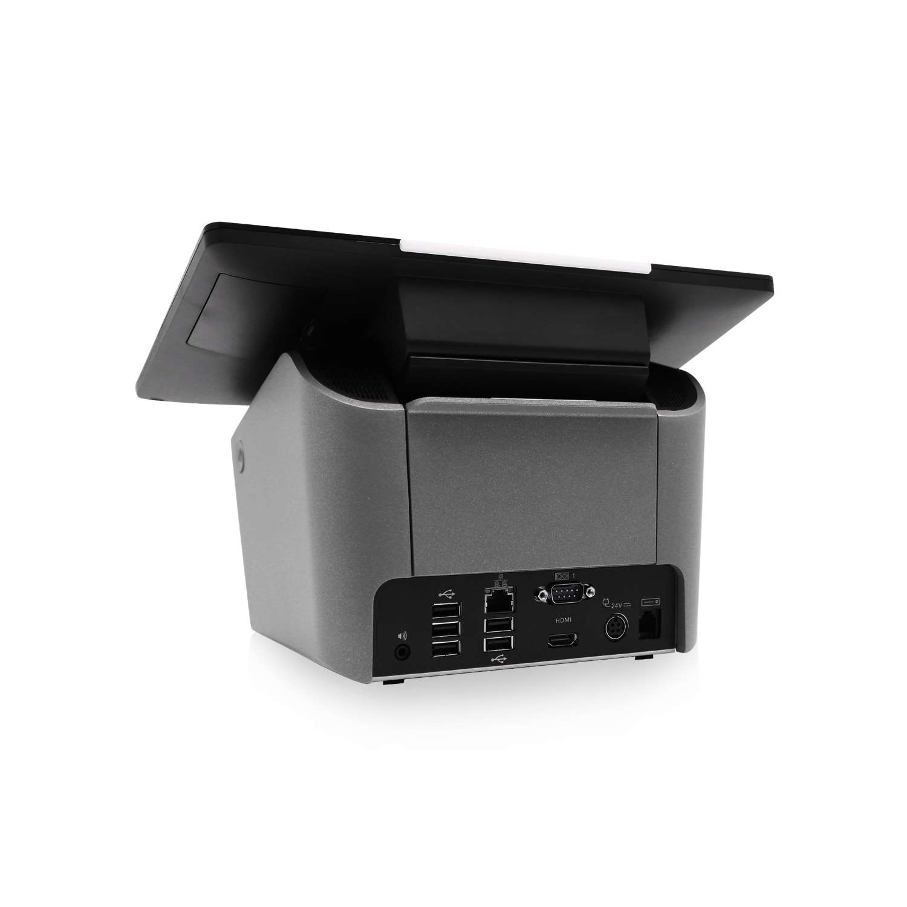
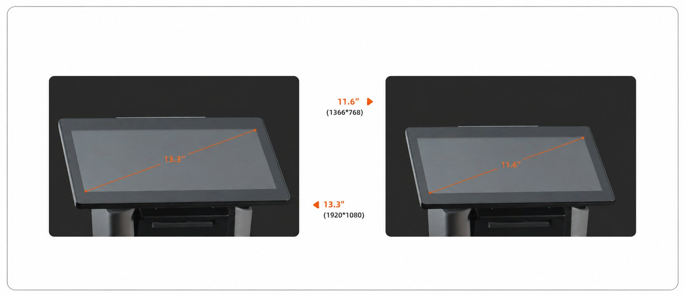
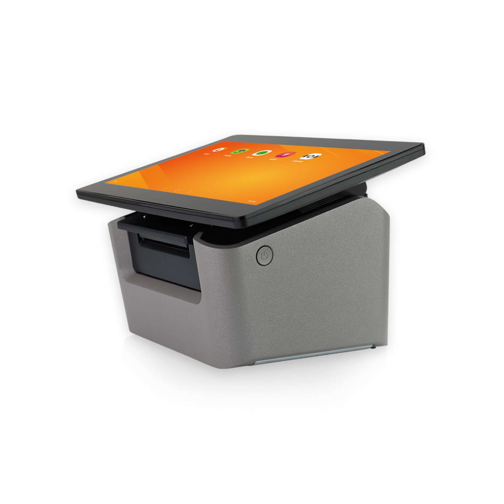

Contacto
- Bogotá, Colombia
POS compacto todo en uno para operaciones modernas de punto de venta
El K&T-K1 es una terminal POS todo en uno, compacta, inteligente y preparada para el futuro. Su diseño integra hardware, pantalla táctil, conectividad, impresión térmica y opciones de expansión para responder a escenarios comerciales exigentes.

El K&T-K1 puede adaptarse a distintas necesidades operativas mediante configuraciones de pantalla y plataforma de software.

El K&T-K1 permite seleccionar la plataforma operativa más adecuada para cada proyecto, facilitando la integración con sistemas POS, software empresarial y periféricos.
Plataforma ágil y de bajo costo para aplicaciones POS móviles, restaurantes, cafeterías y puntos de servicio de alto dinamismo.
Plataforma empresarial para integración con sistemas ERP, software de gestión, facturación electrónica y aplicaciones corporativas.
Alternativa de código abierto para proyectos con requerimientos específicos de seguridad, personalización o integración especializada.
Estructura con textura metálica diseñada para resistir el uso diario intensivo en mostradores comerciales de alto tráfico.
Diseño con blindaje interno que mejora la estabilidad del sistema en entornos con alta densidad electromagnética.
Sistema auxiliar de disipación térmica que mantiene la temperatura operativa estable durante jornadas prolongadas.
Impresora térmica de alta velocidad con autocorte automático para agilizar los procesos de pago y comprobantes.
Conectividad para cajón monedero, lector de código de barras, NFC/MSR, audio, display secundario y otros periféricos.
Formato todo en uno que reduce el espacio en el mostrador y simplifica la configuración y mantenimiento del puesto.
El K&T-K1 puede configurarse con diferentes procesadores según la plataforma seleccionada y los requerimientos del proyecto.
El K&T-K1 se integra con los periféricos esenciales del punto de venta para construir estaciones completas en retail, restaurantes, salud, gobierno y servicios.

Ideal para organizaciones que necesitan velocidad en caja, control operativo, integración con sistemas y continuidad en el punto de atención.
Acompañamos proyectos en Colombia, Centroamérica y El Caribe con enfoque consultivo y soporte especializado.
Podemos integrar el POS con turnos, cartelería digital, autogestión y operación omnicanal bajo una sola plataforma.
No solo entregamos hardware. Analizamos su operación y recomendamos la configuración adecuada para su sector.
Acompañamiento preventivo y correctivo según el alcance contratado, con equipo técnico especializado.
Diseño, configuración, integración y pruebas para despliegues corporativos con altos estándares de calidad.
Soluciones preparadas para crecer por sede, ciudad, país o región junto con su operación.
Nuestro equipo le ayuda a seleccionar el POS correcto, integrarlo con su operación y garantizar una experiencia eficiente en el punto de atención.